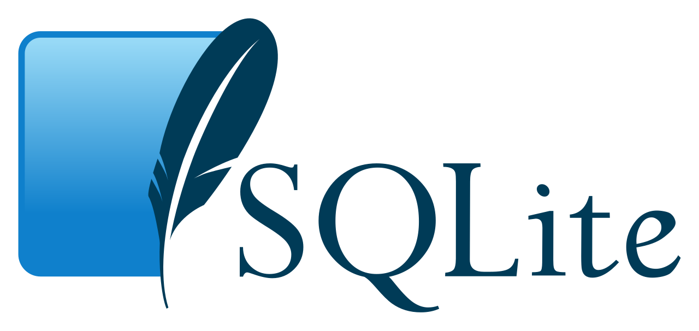
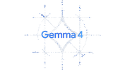

0.1.0-pre · founder beta · Curitiba
IA local que executa, audita e protege.
AetherCore é um runtime operacional de IA local-first: entende contexto, opera sobre arquivos reais e transforma intenção em execução verificável. Modelos locais por padrão, Uplink apenas quando faz sentido, e ações sensíveis sempre passando por governança explícita.
- CEF
- desktop runtime
- ARL
- approval layer
- XLSX
- native BI tools
modelocal-first
uplinkexplicit
gatedeny-first
traceimmutable
$ aether run --goal "fechar relatório"
✓ vault mounted: /workspace
✓ planner: 7 steps generated
⧗ waiting ARL approval: write:xlsx
✓ ledger sealed: 0xA5F3
// runtime stack
Tecnologias que alimentam o Kernel.
AetherCore combina memória local, execução de modelos, ferramentas abertas e governança própria em uma stack operacional independente.

SQLite memória local / domínio público NousResearch
modelos abertos e experimentação
NousResearch
modelos abertos e experimentação

Gemma 4 modelo compatível / uplink opcionalReferências técnicas exibidas apenas para contexto. Não implicam endosso, afiliação ou parceria oficial. SQLite é domínio público (CC0). AetherCore é independente.
// arquitetura trinity
Cofre local. Agente. Uplink governado.
A arquitetura não depende de um truque de interface. Ela organiza contexto, execução, permissão e evidência dentro do mesmo fluxo — como um sistema operacional cognitivo, e não como um chat enfeitado.
Cofre Local
Arquivos permanecem no dispositivo por padrão. PDFs, planilhas, contratos, repositórios e contexto sensível entram como artefatos vivos, acessíveis sem terceirizar soberania.
- workspace vaults
- file graph
- hash + diff
Planner →
Executor →
Critic
O agente converte intenção em plano, aciona ferramentas nativas, observa efeitos e itera com memória operacional — sem reduzir trabalho real a prompts descartáveis.
- ReAct loop
- typed IPC
- tool registry
ARL deny-first
Nuvem e ações sensíveis só acontecem com permissão explícita: escopo, risco, arquivos tocados, diff e justificativa aparecem antes da execução.
- approval layer
- policy engine
- audit ledger
// compute core
Um processador visual para uma IA que opera de verdade.
O núcleo do Aether aparece como um campo vivo de execução: trilhas de dados, gates, hashes, streams e estados orbitam a logo oficial como se o runtime respirasse em tempo real.
LOCALdefault execution
ARLhuman approval
LEDGERsealed evidence
0xA5F3 / ledger sealed
uplink: explicit
write:xlsx waiting
// execution loop
Do arquivo real ao ledger auditável.
Do contexto ao artefato final, o fluxo é contínuo: planejar, validar, executar e auditar acontecem na mesma superfície, com feedback visual e governança em cada transição.
Traga arquivos reais.
Monte um vault com PDFs, planilhas, código e notas. Antes de agir, o agente lê estrutura, contexto e dependências operacionais.
vault.mount('/workspace')Transforme objetivo em plano.
O Planner expõe passos, ferramentas, dependências e possíveis efeitos colaterais antes que qualquer mudança aconteça.
agent.plan(goal).explain()Mantenha controles visíveis.
O ARL deixa risco, diff, escopo e permissões legíveis. Sem aprovação, o gate interrompe a ação com elegância.
arl.require('write:xlsx')Execute local, registre tudo.
Ferramentas em Rust e IPC tipado executam a tarefa, produzem artefatos e selam evidência verificável no ledger.
tool.run() → ledger.seal()// capacidades
Uma stack de TI, não um chatbot com skin.
Infraestrutura, memória, política e execução aparecem como produto. O valor está na capacidade operacional da stack — não numa camada cosmética sobre APIs.
CEF Desktop Runtime
Interface desktop com superfícies web, comandos locais e sensação de workspace nativo.
Rust IPC + Tool Registry
Ferramentas nativas acionadas por contrato, com menor atrito, melhor observabilidade e controle fino de permissão.
SQLite Memory + FTS5
Memória local pesquisável para contexto, logs, arquivos, decisões e trilhas de execução.
Native XLSX / BI Tools
Planilhas e relatórios deixam de ser anexos passivos e viram matéria-prima operacional.
Deny-first ARL Gates
Ações sensíveis começam bloqueadas. A aprovação humana libera apenas o escopo necessário — nada além.
Cloud Uplink opcional
Quando nuvem agrega capacidade, ela entra como escolha explícita, rastreável e reversível.
// soberania de dados
Automação autônoma sem terceirizar seus arquivos.
O problema que originou o AetherCore é estrutural: para automatizar análise, o mercado ainda exige que dados críticos saiam da empresa. O AetherCore inverte essa lógica com um runtime local-first capaz de entender contexto de negócio, operar sobre arquivos reais e preservar compliance desde a raiz.
Nuvem não é neutra.
Para automatizar análises complexas, o mercado ainda empurra dados sigilosos para infraestrutura de terceiros. Em ambientes com LGPD, sigilo contratual e governança, isso não é detalhe técnico: é bloqueio de adoção.
- planilhas confidenciais
- contratos
- código interno
Sistema operacional cognitivo.
O AetherCore atua como uma infraestrutura em Rust para hospedar IA local-first, executar ferramentas nativas, navegar em sandbox e acionar uplinks externos apenas quando o operador decide.
- runtime em Rust
- browser sandbox
- uplink explícito
Uma IA que atua, não só responde.
O agente planeja, lê arquivos, cruza contexto, escreve artefatos e deixa trilha verificável. O valor não está só na resposta: está no encadeamento entre decisão, execução e auditoria.
- ReAct agent
- ARL deny-first
- audit ledger
// produto + negócio
Um core, dois vetores de produto.
A plataforma se desdobra em dois vetores comerciais sem perder coerência tecnológica. A mesma base local-first atende tanto o operador que quer potência prática quanto a empresa que exige sigilo, controle e implantação séria.
Assistência operacional para uso diário.
Voltado a usuários avançados, builders e desenvolvedores. A interface web reduz fricção de entrada; a camada premium desktop libera fluxos completos de criação e edição diretamente na máquina do usuário.
- web entrypoint
- desktop premium
- créditos e upgrade
On-premise para dados sensíveis.
Licenciamento corporativo para processamento autônomo e local de dados internos, com controle granular sobre permissões, revisão humana, retenção e rastreabilidade de ponta a ponta.
- on-premise
- compliance
- soberania programável
Mais perto do hardware. Menos dependência cega da nuvem.
Ao mover o processamento para a borda, o produto reduz exposição de dados, aproveita hardware ocioso e libera automação avançada onde terceirizar contexto crítico simplesmente não é opção.
- edge computing
- privacidade
- eficiência
// BI MVP
O MVP atual começa em BI local.
O recorte mais claro do produto é transformar planilhas complexas em insight estratégico sem expor dados. O usuário envia um XLSX, define um objetivo de negócio e recebe uma análise pronta dentro de um fluxo local, governado e operacional.
Objetivo do MVP
Provar que o usuário consegue extrair relatórios e insights estratégicos de XLSX complexos com privacidade integral, evitando o risco estrutural das ferramentas online.
Medição de sucesso
Precisão na leitura dos dados, comparada à análise manual ou a agentes online, somada à velocidade na produção de relatórios gráficos e estatísticos.
Público dos testes
Analistas financeiros e controladores de empresas médias e grandes, usando o sistema por 10 dias em rotinas como conciliação, forecast e análise de custo.
Próximo passo
Expandir o agente para cruzar múltiplas planilhas simultaneamente, evoluindo o fluxo para um “data lake local” simplificado e acionável.
Ferramenta entregue
Leitura e escrita nativa de XLSX já fazem parte do runtime Rust, com escrita tratada como ação sensível e protegida por permissão e aprovação humana.
Por que isso importa
Segurança e modelo proprietário sustentam a base; o valor percebido pelo usuário final aparece na análise útil, acionável e pronta para decisão.
// status + release notes
0.1.0-pre com trilha de entrega real.
Em beta interno, o AetherCore já opera como workspace desktop local-first com workspaces, sessões, documentos, Aether Agent, ARL, uplinks explícitos e ferramentas nativas de BI. O foco é avançar com estabilidade: entregar o que já existe, marcar o que está em beta e endurecer cada camada antes de ampliar escopo.
Workspaces + RAG local
Workspaces, sessões, documentos, vault e busca local passaram a estruturar a memória operacional do produto.
Ferramentas, permissões e sandbox
Registry de ferramentas, modos de acesso, browser sandbox, shell, skills e agentes foram conectados a uma política de execução coerente.
Aether Reliability Layer
ARL consolidou deny-first, aprovação humana, trilhas JSONL, redaction de segredos e retenção configurável como camada de confiança do runtime.
CEF como runtime padrão
O desktop passou a carregar o frontend localmente via CEF, eliminando dependência de localhost e do WebView do Edge.
XLSX nativo no Rust
ReadExcel e WriteExcel colocaram BI diretamente no fluxo do agente, com governança sobre escrita e alteração de artefatos.
Hardening com mensagem clara.
Hardening do ARL, beta privado assistido e empacotamento público conservador entram como próximos passos — não como promessas infladas.
Roadmap: OCR avançado, reranking, RBAC enterprise, assinatura de artefatos e suites adversariais maiores entram como próximas camadas — somente depois de validação técnica e hardening.
// visão
A próxima interface de trabalho não é uma conversa. É um runtime governado.
AetherCore existe para converter intenção em ação verificável. Hoje, isso significa um runtime local-first com Uplink explícito e aprovação visível; amanhã, evolui para uma infraestrutura híbrida em que operações podem permanecer locais, subir para servidores dedicados da própria AetherCore ou usar modelos externos — tudo dentro de um fluxo cognitivo contínuo, auditável e soberano.
// fora da tela
Quando o Aether trabalha, o dia volta a respirar.
O Aether reduz o peso operacional para que foco, presença e movimento voltem a ocupar espaço no dia.


// less screen protocol
Menos tela, mais
Delegue o operacional ao Aether. Arquivos, ferramentas, permissões e execução fluem no runtime — enquanto sua atenção volta para o que exige presença humana.
// founder beta
Entre no runtime. Deixe o operacional fluir.
Valide o AetherCore com arquivos reais, controles visíveis e execução governada.
batchinvite only
regionCuritiba / remote
modelocal-first
guardrailARL approval